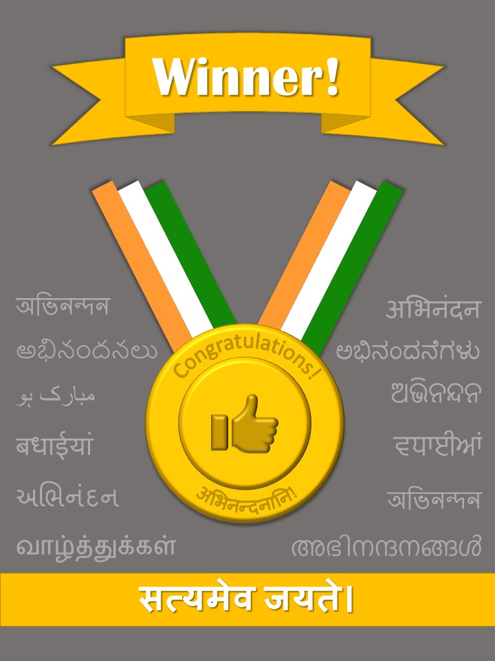

Flag of The Republic of Indiaभारतीय ध्वज (तिरंगा)
Saffron signifies Sacrifice, white signifies Peace and green signifies Prosparity.
The blue wheel is the Ashoka Chakra, having 24
spokes, which inspires to work tirelessly.

Developed By: Vani Kulkarni,
Graphics Design: Mayuresh Kulkarni